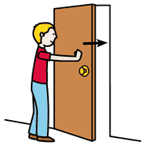
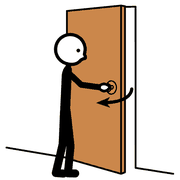
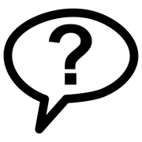

La forza ha un'intensità, una direzione e un verso. Quando il bambino sceglie quanta forza mettere in un lancio, sta già facendo una scelta di misura.
per lanciare più lontano serve più forza;
per correre più veloce serve più spinta nelle gambe;
per sollevare un peso maggiore serve più forza nelle braccia.
Forza e forza opposta
Quando una forza spinge in un verso, la resistenza spinge nel verso opposto. Il tiro alla fune rende visibile questa idea, che altrimenti resterebbe astratta.
Dosare la forza

spingere

tirarelanciare
Con l'esperienza, il bambino passa da una percezione globale di sé a una più articolata: sente i segmenti delle braccia, capisce quanta forza ha rispetto agli altri, impara a dosarla.
Spingere e tirareCarrelli, panche, compagni seduti su un telo.
LanciarePalline leggere e pesanti verso lo stesso bersaglio.
CalciareUn palloncino e un pallone con lo stesso piede: è la stessa forza?
ascoltare, non correggere
La conversazione clinica
parlareascoltare

domanda
Dopo il gioco, una conversazione guidata verifica se l'esperienza è diventata concetto. L'insegnante fa domande aperte e ascolta senza correggere:
Quando usate la vostra forza?
Si può fare forza senza spingere né tirare?
Si può fare forza e non ottenere nulla?
Chi è più forte: chi tira o chi resiste?
Le risposte si annotano: mostrano a che punto è ciascun bambino.
 parlare
parlare ascoltare
ascoltare